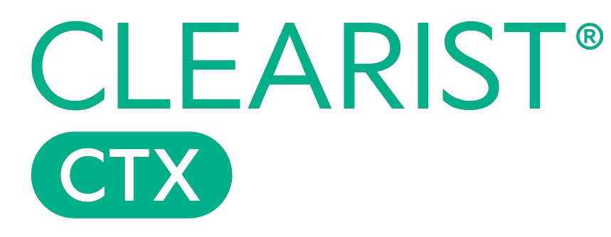
For Skeyndor professionals and invited guests.
Enter the access code to continue
The first range to combine topical GABA with cortisol control.
Two mechanisms from aesthetic medicine and psychodermatology, combined in a single clinical protocol. Available exclusively through authorised skin professionals.
Free. 15 minutes. In-salon or virtual. No obligation.
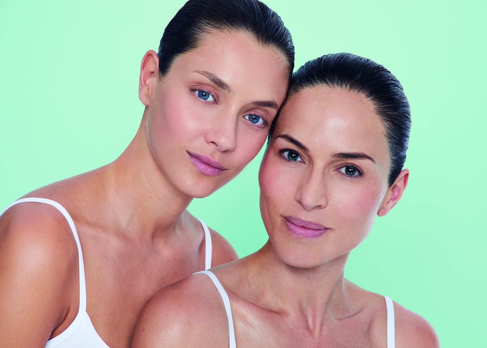
Consumer skincare targets the surface. But for the majority of adult women with acne, the triggers are hormonal, stress-related, and systemic. That requires a different class of treatment.
Combination and oily skin is the single most common dermatological concern globally.
Experience acne in adulthood. Persistent or late-onset. Hormonal, stress-driven, or both.
Report significant psychological impact. Acne is clinically linked to cortisol elevation, anxiety, and reduced quality of life.
Source: Pubmed, National Library of Medicine; Skroza et al., 2018
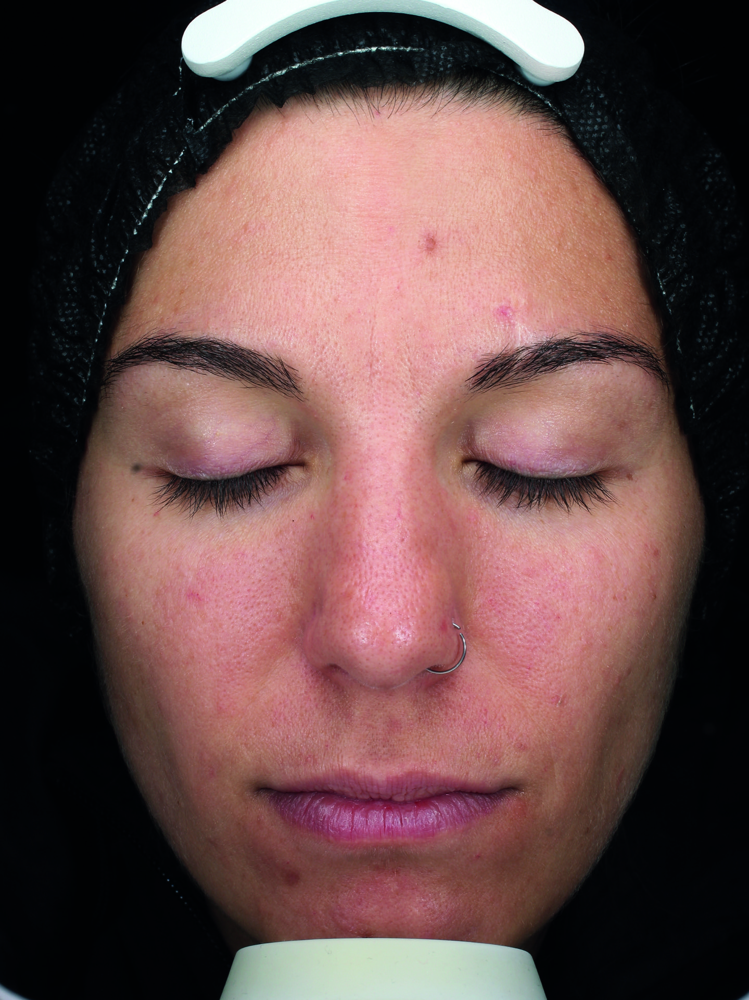
Before treatment
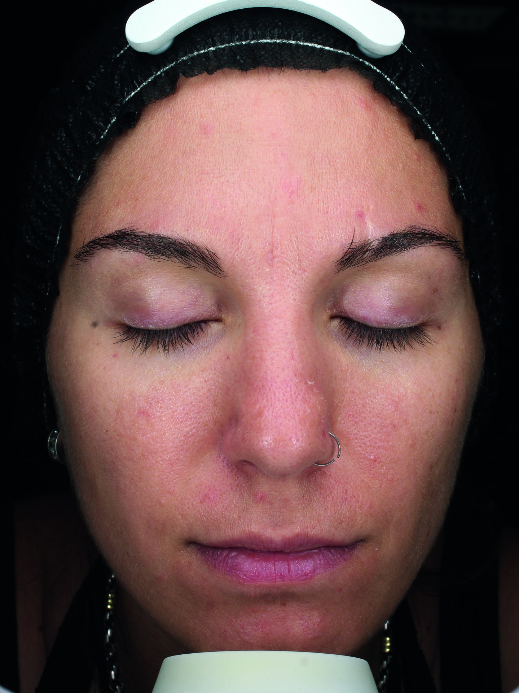
After 15 days with CTX
GABA reproduces the sebum-reducing effect of botulinum toxin, topically. Tephrosia Purpurea inhibits 70% of cutaneous cortisol production within 2 hours. Together, they address acne at both its mechanical and hormonal triggers.
Psychodermatology research has established a direct pathway: psychological stress elevates cutaneous cortisol, which increases sebaceous activity, weakens the barrier, and drives inflammatory acne.
Clearist CTX combines principles from aesthetic medicine (GABA, the topical Botox* mechanism) with psychodermatology (Tephrosia Purpurea, cortisol inhibition). Each addresses a different driver of acne.
A neurocosmetic that delivers the Baby Botox* effect topically. Reduces sebum. Minimises pores. No injections.
Source: J. Cutaneous & Aesthetic Surgery, Goodman, 2010
Tephrosia Purpurea extract targets your skin's own cortisol production. Less cortisol = less sebum, less inflammation, stronger barrier.
Source: Brain-Skin Connection, Avon R&D, 2014
GABA (gamma-aminobutyric acid) reproduces the muscle-relaxing mechanism of botulinum toxin topically. It reduces sebaceous gland activity, minimises pores, and modulates the skin's stress response. No needles. No clinic visits. Same science.
Placebo-controlled, peer-reviewed. 60 volunteers. 28 days. p <0.05 for sebum, pore size, and papule count.
Birkett et al., 2022. In vivo, 2% succinic acid vs. 2% salicylic acid and placebo.
Dermatological control study: sebumetry + image analysis + clinical scoring. 60 volunteers with oily skin, 18-35 years. 2% succinic vs. 2% salicylic acid and placebo. Every number is p <0.05.
A 15-minute consultation with a Skeyndor skin therapist. They'll assess your skin, recommend a protocol, and answer your questions.
Free. 15 minutes. No obligation. Professional advice.
This isn't a collection of products that share a name. It's a coordinated treatment system. Your skin therapist prescribes the protocol. The products do the rest.
Prescribed by your skin therapist. Each step is formulated to prepare the skin for the next.
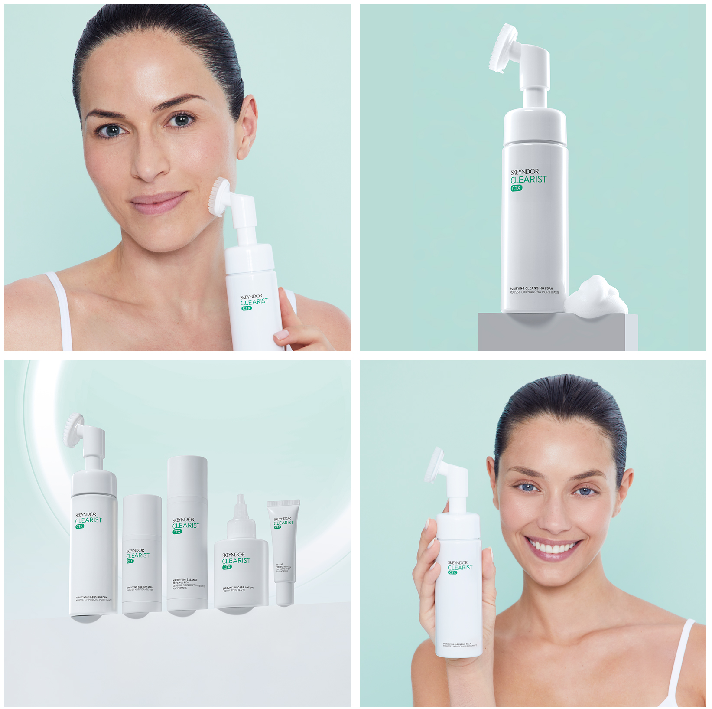
Tri-acid exfoliant cleanser. Mandelic, glycolic, and levulinic acids dissolve sebum plugs and surface debris while betaine maintains barrier hydration.
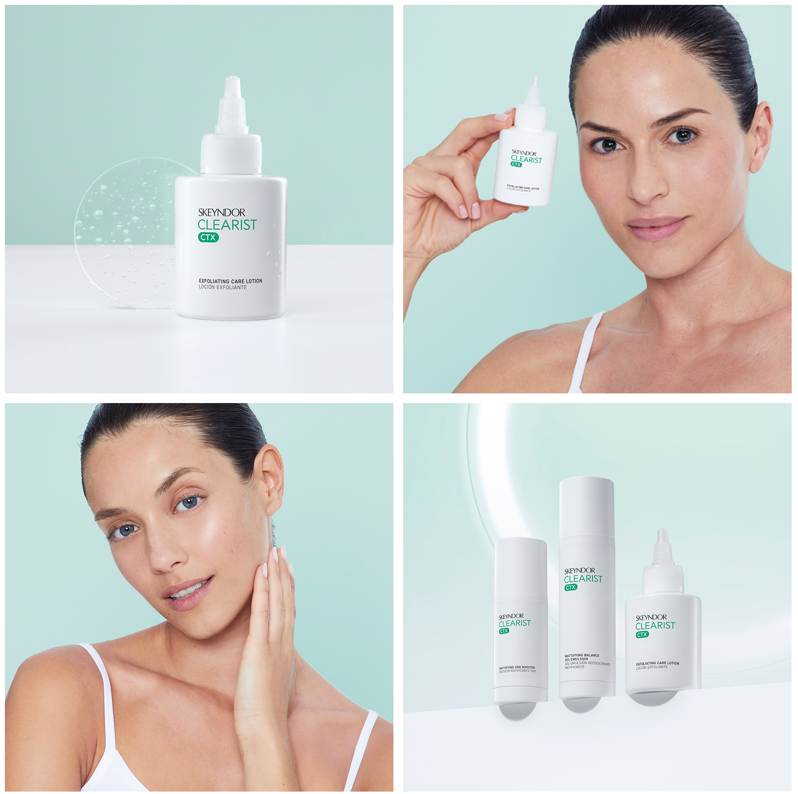
Progressive exfoliating lotion with anti-cortisol action. Refines pores, softens marks, reduces the cosmetic effects of daily stress on your skin.
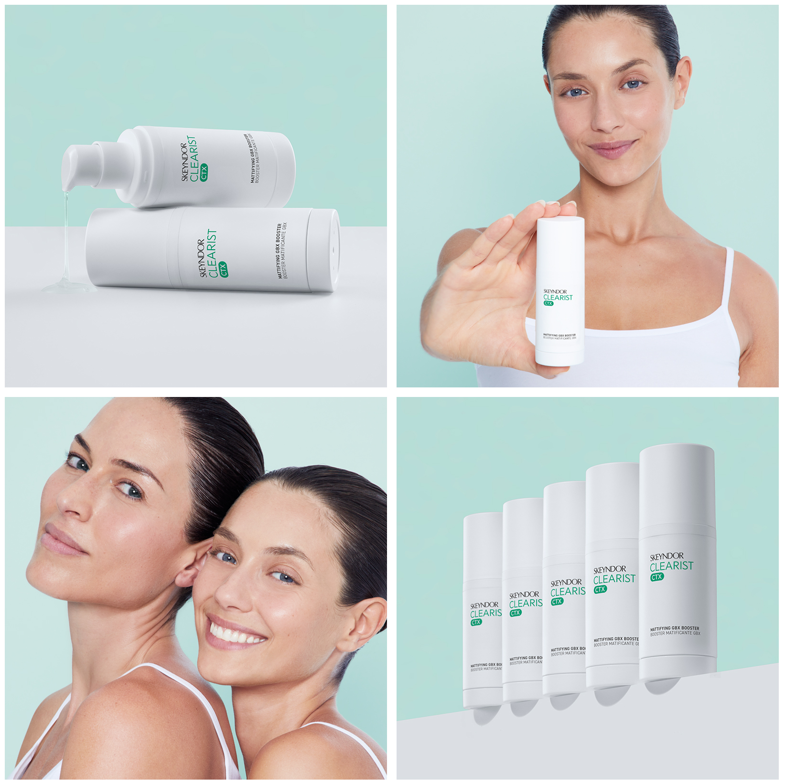
The core innovation. GABA delivers the Baby Botox* effect topically, reducing sebum production at the source. Your skin mattifies from the first application.
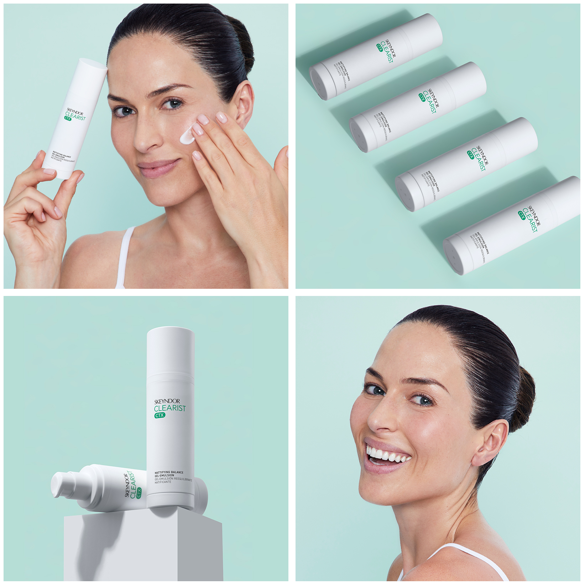
Microbiome-balancing moisturiser with Lactococcus Lysate and Bisabolol. Restores barrier function compromised by active treatments. Matte finish without dehydration.
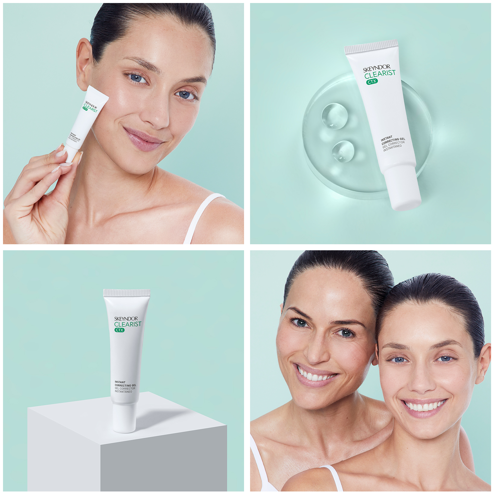
Targeted spot treatment. Concentrated AHA formula (6.0%) forms an invisible film over active blemishes. Localised exfoliation accelerates resolution without affecting surrounding tissue.
Documented under dermatological control. 21 volunteers, ages 18-55, acne grade 1-3. 3 weeks of home products + 2 professional treatments.
Excess sebum. Enlarged pores. Active breakouts. Post-inflammatory marks. Elevated cutaneous cortisol.
Immediate mattifying effect. Tri-acid cleanse removes sebum plugs. GABA begins modulating sebaceous activity.
MattifiedSebum production regulating. Blackhead count reducing. Pore diameter decreasing. Tephrosia Purpurea cortisol inhibition measurable.
41.5% less sebum51% reduction in papules and pustules. 9% pore size reduction. Post-acne marks softening. Cortisol-sebum loop disrupted.
51% fewer breakouts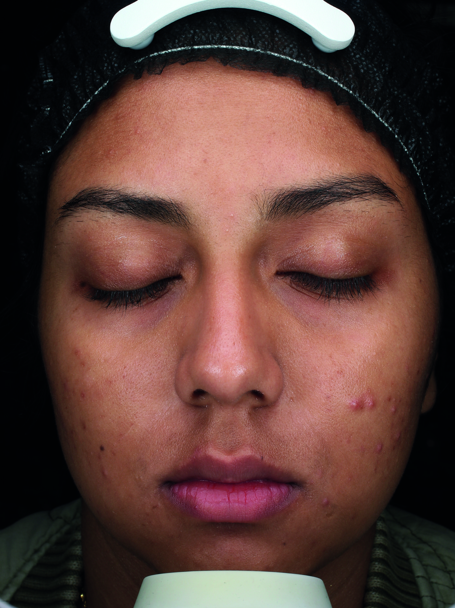
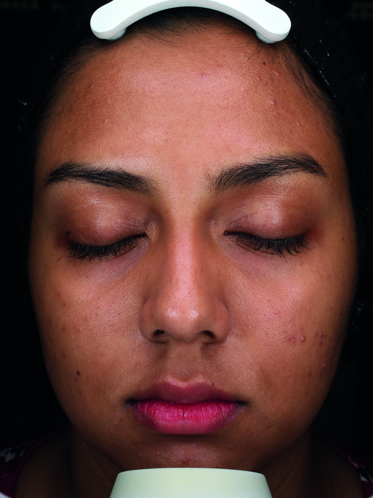
In vivo study: Sebumetry + image analysis + clinical score. 60 Asian volunteers with oily skin, 18-35 years. 2% succinic vs. 2% salicylic and placebo. 28 days. Pore size decreased 9% (p <0.1). Papules/pustules reduced 51% (p <0.05). Sebum reduced 41.5% (p <0.05 vs. placebo and salicylic acid).
4 independent studies. 60+ volunteers. Sebumetry, image analysis, clinical scoring. We don't round numbers. We don't hide methodology.
6 clinically validated compounds. Each with published mechanism of action and dose-response data.
Relaxes sebaceous glands without injections. The neurocosmetic that delivers Baby Botox* results topically.
Botanical extract that inhibits 70% of cortisol production in 2 hours. Targets the stress-skin axis at its source.
65% reduction in 5-alpha-reductase, the enzyme that causes excess oil production. Mineral-grade sebum control.
Outperforms salicylic acid in clinical trials. 51% fewer breakouts with a gentler, safer exfoliation profile.
185% boost in your skin's antimicrobial defence peptides. Rebuilds the microbiome barrier that acne destroys.
Counteracts irritation from acids and retinoids. The calming layer that lets the actives work without redness.
Full methodology and citations available on request.
Birkett et al., 2022 · Marulanda-Gomez, 2023 · Skroza et al., 2018 · Brain-Skin Connection, Avon R&D, 2014
"I'd tried everything for my hormonal acne. Three weeks on the CTX system and my skin is calmer than it's been in years. The booster is genuinely different to anything I've used before."
"The difference after the first week was the mattifying. I didn't need blotting papers by midday for the first time in years. By week three, my pores were visibly smaller."
"My dermatologist explained the GABA mechanism and I tried it. The spot corrector alone is worth the consultation. Blemishes dry in half the time."
Clearist CTX is dispensed exclusively through authorised Skeyndor skin clinics. Your therapist determines which products, what sequence, and how to integrate with existing treatments.
Clearist CTX uses clinical-grade concentrations of active ingredients (like 10% AHA in the exfoliating lotion) that aren't available in consumer products. More importantly, it targets the stress-skin connection through GABA and Tephrosia Purpurea - ingredients specifically chosen from aesthetic medicine and psychodermatology research. It's formulated as a treatment system, not individual products.
Mattifying effect is immediate - from the first application. Visible pore refinement and sebum regulation typically appear within 1-2 weeks. Full clinical results (reduced breakouts, softened marks) were documented at 3 weeks in the dermatological control study. Your skin therapist will set realistic expectations based on your specific skin grade.
The range includes both active treatment products (foam, exfoliant, booster) and soothing products (gel-emulsion with Bisabolol and HS Soy Extract). The gel-emulsion is specifically designed to calm irritation from acids. Your consultation will determine the right protocol for your sensitivity level - you may start with fewer steps and build up.
CTX works best as a complete system. That said, your skin therapist can advise on integration with specific products you're already using (like prescription retinoids or SPF). The gel-emulsion actually helps counteract irritation from other active treatments.
No prescription needed. CTX is professional-grade cosmeceutical skincare available through authorised Skeyndor skin clinics and stockists. A free consultation ensures you get the right protocol for your skin type and concerns.
A free 15-minute session (in-salon or virtual) with a qualified Skeyndor skin therapist. They'll assess your skin type, acne grade, lifestyle factors, and current routine to build a personalised CTX protocol. No obligation to purchase.
The stress-acne-stress loop keeps skin stuck. Clearist CTX interrupts it at every stage.
Clearist CTX is available through authorised Skeyndor skin clinics across Australia. Your consultation is free.
Free consultation. In-salon or virtual. No obligation.
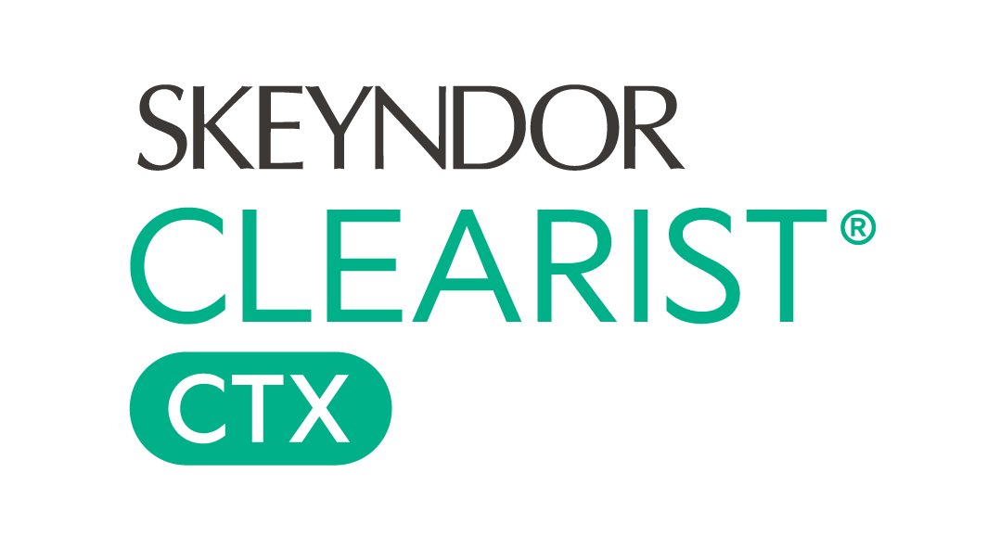